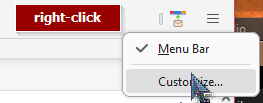
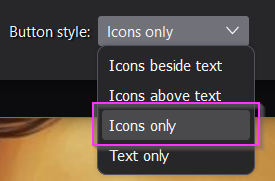
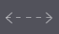
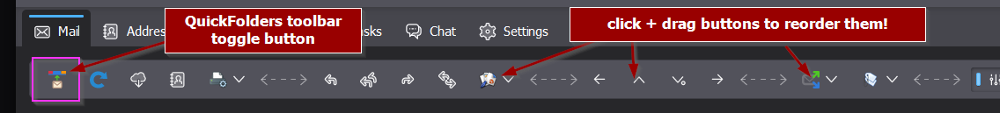
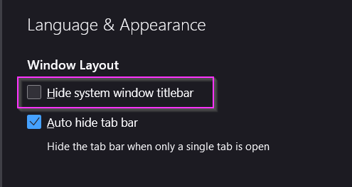

QuickFolders.org
| Home Installation Version History Premium Functions FAQ + Tips Support QuickFolders! Screenshots Bugs + Feature Requests quickFilters Menu On Top GDPR + Impressum |
FAQ and Tweaks
Make sure to visit our YouTube channel with tips and tricks such has how to get started with Addons.
A list of common questions & answers and also some tweaks that can be done to better suit QuickFolders to your mail client. These apply to all supported Mozilla based mail clients such as Thunderbird, SeaMonkey, Postbox.
Important News Flash!
QuickFolders is fully compatible with Thunderbird 115
The latest edition of QuickFOlders v6.3 finally restores the beloved custom icon feature to work with the completely recreated folder tree of Thunderbird 115.
With this you can add custom icons to any folder. Please reference the feature comparison page on any license restricions.
If you are interested or comments in ongoing work on keeping QuickFolders compatible with Thunderbird please visit the QuickFolders github: Github Issues tracker
Frequently Asked Questions
Expand AllCollapse All
- An important Feature is missing! Where can I request this?
- Go to the QuickFolders github issue tracker, and then raise a new issue.
- Something is not working, I think there is a bug, what do I do?
- Report the bug or contact me
directly. Get as much information as possible, there is a section about creating a bug log
here.
The best way log errors is to use the built in error console (under Tools « Developer Tools « Error Console).
Then you can just highlight a range of messages and copy it to the clipboard. - Can QuickFolders open a new mail tab for me?
- From version 1.8.8, you can hold down [Ctrl] while clicking a QuickFolder tab, this will open the folder in a new tab.
- Is there a debug mode?
- There are numerous debug options that cause more information message in the javascript error console. Error console can be shown using the shortcut Ctrl+Shift+J or via the Thunderbird tools menu under Developer Tools « Error Console.
- Can I change the order of toolbars?
-
Yes, add the following lines to userChrome.css and also make sure the Thunderbird
configuration setting toolkit.legacyUserProfileCustomizations.stylesheets is enabled.
#toolbar-menubar { order: 1; } #tabs-toolbar { order: 2; } unified-toolbar, #mail-bar3 { order: 3; } #QuickFolders-Toolbar { order: 4; }
- Does QuickFolders work with the current beta of Thunderbird?
-
The answer is most likely "yes".
Although changes in Thunderbird are getting more brutal every year for us
"experimental" Add-on developers, this is exactly what I am financing through
licenses: keeping up to date with the changes in Thunderbird even if many of
the functions in QuickFolders are not supported through APIs.
I am always compatible with the ESR (currently all versions starting with 115)
and also try to bump up the version number for Thunderbird beta users.
If you find any issues in the current Thunderbird beta, please report the problem on the Github issue tracker. I don't constantly test with that but I am very quick with fixing regressions caused by the beta, because it will reduce my workload on the annual ESR major version bump.
- Can I contact you directly?
- Yes, any feedback regarding QuickFolders is strongly encouraged - the easiest way is from the options / support dialog:

- Since Tb 115 I am missing your toolbar buttons!
-
In Windows, Thunderbird 115 squishes all toolbar buttons into the window title-bar, which can lead to missing toolbar buttons (they are cut off at the right). There are 2 ways to work around this.
-
stop wasting space with labels
Show the buttons as icons only (recommended). You can do this by right-clicking the toolbar then selecting customize and then choose icons only on the bottom. You can also use this page for re-ordering your most important buttons (after upgrade from v102, Thunderbird 115 simply adds all new Add-ons on the top right! So you're missing stuff here.)
To configure the toolbar, right-click it and select Customize from the drop-down menu
Icons only mode is best for people with diverse needs and many Add-ons:
Use the spacers  to structure your toolbar in a useful way:
Once done, click Save. Below is an example on what it could look like.

Note that I moved the SmartTemplates button (Add-on for replying with Templates) into a group with the reply / forward buttons. Add-ons for Tags and filters are more to the right, closer to the search tools.
-
give back a separate space to the toolbar
Also nice (closer to Tb102) - show the toolbar in a separate area from the title bar. This is a global Thunderbird setting. This will give you some extra horizontal space for your tools, but of course takes a little extra vertical space. Open Thunderbird settings, General tab. Under Language & Appearance, disable "Hide system window titlebar":

once done, click Save. To give you inspiration, this is the way I have set up mine:
-
stop wasting space with labels
- Can I transfer my QuickFolders tabs and settings to another machine?
- Yes there is a way to do this for all users with licenses, see Github issue 442 for detailed instructions.
- I can see no colors on my Folder Tabs. Why is this?
- In Options, on the "Bling my Tabs!" page, activate the "Flat Style" theme and make sure not to select "Native Tabs". Without this the QuickFolders are just displayed as ordinary toolbar buttons, which takes away a lot of their style-ability.
- QuickFolders is great
but ... it looksugly . How can I change that? - Scroll down to the Layout Tweaks section for some handy CSS and more UI teaking.
- Can I reorder the Tabs?
- Just drag the Tabs on top of each other - do not try to drag a tab into the
gap between two tabs, it will only be put to the far right then.This is what it should look like:

- Some of my Folders disappear at the bottom of the screen!
- That's a bug specific to Thunderbird 3.0.1, you can fix it, by upgrading to the latest version of Thundebird, 3.0.3.
- in Linux I cannot see menu icons!
- If in Ubuntu, try changing the following setting: gconf-editor /desktop/gnome/interface/menus_have_icons
- What is UserChrome???
- The UserChrome file is your personal "makeup kit" for changing all visual aspects of Thunderbird - for how to use it, skip down to the Tweaks Section "How to Edit userChrome.css"
- You're brilliant. Can I reward you?
- First of all, pass on the good news about QuickFolders to all other Thunderbird/SeaMonkey/Postbox users you know. You're always welcome to send me (Axel) emails directly from the Options / Support tab, but I am also very grateful to donations: Just click here for detail.
The additional debug options for QuickFolders can be set in about:config - or by right clicking the "Debug" checkbox on the QuickFolders Options Advanced tab:

The Debug checkbox must be activated for any of the other debug options to be effective.

This will minimize the amount of reading / copying / pasting of error messages. Do not activate all of them because you will be flooded with messages, if in doubt you can contact me for suggestions for relevant ones for a specific problem.
Layout Tweaks
In order to style QuickFolders to your needs, above and beyond the options available on the
"Pimp my Tabs" page, you can edit the userChrome file and add some style rules.
If you know about CSS then you might find the following diagram helpful:

These can be used in userChrome.css which you can edit using tools like "Edit Config Files..."
Some Examples For Re-Styling QuickFolders
Add any of the following CSS rules to your userChrome.css file. For the geeks, there is a more detailed article about customizing Mozilla here.
- How to Edit userChrome.css
First you need to open the Chrome subfolder located in your Profile folder. Where is my Mozilla profile located? The Chrome subfolder is designed to contain any user specific changes. It is also the designated place to have a "Layout File" called userChrome.css; this doesn't exist by default but you can just create an empty text file of this name.
Example location
C:\Documents and Settings\JohnDoe\Application Data\Mozilla\Thunderbird\Profiles\r4nd0mStr.Default\chrome
JohnDoe is your logon name
r4nd0mStr is always a random string
Default is the name of your THunderbird Profile (so it could differ as well)Then all you need to do is insert any of the rule sets in the following chapters. The good thing about this approach is that you do not change the extension folders themselves, so all your changes will stay intact even if you deinstall the extension or if it is (automatically) updated.
- Tabs with Restricted Width
#QuickFolders-Toolbar.toolbar-flat toolbarbutton { max-width: 120px ; } - Transparent Background for better Theme Integration
A lot of Themes modify (including Personas) the background of the toolbars, so you might not want to put a color on it.#QuickFolders-Toolbar.toolbar-flat { background-color: transparent !important; } - Inserting a Space after the Inbox folder
#QuickFolders-Toolbar.toolbar-flat toolbarbutton[label^="Inbox"] { margin-right:10px !important; }
- Special Icons
For making this example work, create a Folder named "QF-icons" in the chrome folder of your user profile. Then copy in Icon Images of size 16*16 pixels. You can now set a user defined icon based on the (start of the) label on the QuickFolder tab.#QuickFolders-Toolbar.toolbar-flat toolbarbutton[label^="Paypal"] { list-style-image: url("QF-Icons/paypal.gif");} - Tiny Popup Menus
A space saver especially helpful when you have lots of subfoldersmenupopup.QuickFolders-folder-popup menuitem { line-height: 10px !important; max-height: 18px !important; margin: 0px !important; padding: 0px !important; font-size:8px; } - Disable transitions
/* disable transitions */ #QuickFolders-Toolbar.toolbar-flat toolbarbutton { -moz-transition-property: color, background-color, background-image, -moz-border-radius, -moz-box-shadow; -moz-transition-duration: 0s, 0s, 0s, 0s, 0s !important; } - Thick Borders
#QuickFolders-Toolbar.toolbar-flat toolbarbutton { border-top-width: 2px !important; border-left-width: 2px !important; border-right-width: 2px !important; border-top-style: solid; border-left-style: solid; border-right-style: solid; -moz-border-radius: 4px 4px 0 0 !important; } - Right-aligned Tabs
#QuickFolders-Toolbar { direction: rtl; } #QuickFolders-Toolbar.toolbar-flat toolbarbutton > *, #QuickFolders-Toolbar.toolbar-flat toolbarbutton, #QuickFolders-Toolbar.toolbar-flat menupopup, #QuickFolders-Toolbar.toolbar-flat menupopup > *, #QuickFolders-Toolbar.toolbar-flat #QuickFolders-Category-Selection { direction: ltr !important; } - Centered Tabs
#QuickFolders-Toolbar { text-align:center !important; } - Modify vertical order of toolbars
The code below works from Thunderbird 115.* :#toolbar-menubar { order: 1; } #tabs-toolbar { order: 2; } unified-toolbar, #mail-bar3 { order: 3; } #QuickFolders-Toolbar { order: 4; }
If there are any special ones I haven't mentioned, please send me an email - see link at the bottom of the page. I will publish the best ones here.
Thanks!
Axel